Where the models stood
Round 1's models were honest about their protocol and untouched by craft. Before improving anything, here is the inventory of what was actually wrong.
- Nothing had ever been tuned. The model factory accepted hyperparameters and was called with none, at all six call sites. Every published score came from defaults.
- The validation era was computed and thrown away. The 2015–2017 rows were counted, reported, and never used: a free tuning and calibration surface left idle.
- No interval anywhere. Every number was a bare point estimate. "0.870 beats 0.787" was asserted without asking whether the gap survives resampling.
- The growth-risk model was scored at a threshold that means nothing. On a 2% base
rate,
predict()at 0.5 is not a decision rule. - The leak probe didn't bite (+0.0024), and I framed that as a demonstration of leakage. It wasn't. Section 10 explains why it was pointed at the wrong task.
- Aspect went in as raw degrees, so a slope facing 359° and one facing 1° looked maximally different to the model.
Everything below obeys one rule, fixed before any model ran:
train <= 2014 model fitting + hyperparameter search (spatial-block CV) val 2015-2017 calibration mapping, model choice test 2018-2020 scored once per model family FOR SELECTION (gated in code) search CV = GroupKFold(3) over 1-degree spatial blocks, train era only metric = average precision (the base rate is the no-skill line)
Amended by the Round-4 review, because the original text overstated. The
TestGate guards the nine selection-relevant scorings, one per model family in the zoo. The diagnostic sections (threshold ladder, ablation, leak
ladder, transfer, permutation importance) also evaluate test-era rows, roughly 330 model
evaluations in all, and are reported in full, never selected on, which is the property that protects the headline from multiplicity and the property the text should have
claimed. The full accounting is published in the red-team section.
The original text also said five CV folds; the search ran three.
TL;DR
What the modeling round actually established
RETRACTED The published calibration claim was false.
The main article said that when the growth model says 12%, about 12% of those fires reach 100
acres. It doesn't. Brier skill score -3.78, substantially worse than forecasting the base rate for every fire, because
class_weight="balanced" inflates probabilities roughly 24× on
a 2% problem. The ranking was fine; the numbers were not. Fitting a calibration map on the
validation era fixes it: +0.053, ECE 0.0035.
BUILT An operational model, measured operationally. The system of record, the tuned HistGradientBoosting model every downstream section analyzes, scores average precision 0.126 ± 0.0023 across five seeds, 6.0× [4.8–7.5] the base rate. (LightGBM posts the best single test AP, 0.131 [0.111, 0.158], reported, not selected; §15 explains why.) In the top 1% of ignitions by risk, 20.7% escalate, capturing 10.0% of all escalations against a hard ceiling of 48.5% that no ranking could beat with that budget.
HONEST Tuning and feature engineering both mattered less than the story usually goes. The three-track search bake-off (random search vs Optuna's TPE vs LightGBM) spread only 0.0053 average precision across strategies, and tuning beat the Round-1 defaults by +0.0145. The full feature ladder bought +0.0031. Details, with intervals, in Negative results.
CAUGHT A leak that looks like innocent metadata.
An MTBS identifier exists only for fires that got big: P(≥100 acres | has ID) =
0.992 against 0.016 without. Adding that single "join key" moves average precision from
0.124 to 0.435. It is not named
fire_size and would survive any "drop the obvious targets" pass.
CAUGHT A sentinel the data audit missed. The human-modification column carries float32-max (3.4×1038) as its nodata fill on 367 California rows, and it was already a Round-1 model feature. Round 2 scanned for sentinel strings and never saw a number this large hiding in plain sight.
And the Tubbs Fire, scored by a model trained only on data through 2014: 97th percentile among fires as out-of-sample as itself (the 2015–2020 reference), with a calibrated escalation risk of 9.4% against a 2.1% base rate.
Restating the question as a decision
"Predict the cause" is a classification exercise. "Which of these ignitions will become something" is a resource-allocation problem with a budget, and it is measured differently.
California reported 26,142 ignitions in the 2018–2020 test era. 538 of them reached 100 acres, 2.06%. That number governs everything downstream: it is the no-skill line for average precision, it makes accuracy meaningless (a model that says "no" to everything scores 97.9%), and it sets hard ceilings on what any ranking can achieve within a fixed response budget.
Two reasons, one operational and one statistical. Operationally, cause is mostly known after an investigation, while escalation risk is needed within the hour. Statistically, the escalation label is clean: fire size is essentially never missing, and its base rate is stable across the split boundaries (2.17% train → 2.06% test). The cause labels are not: the data audit found California's cause-label availability collapsing from 10% missing in the training era to 42% in the test era. Modeling a drifting label would have meant fighting the measurement instead of the problem.
| Response budget | Ignitions flagged | Escalations that exist | Best possible recall |
|---|---|---|---|
| top 1% · ≥100 ac | 261 | 538 | 49% |
| top 1% · ≥300 ac | 261 | 303 | 86% |
| top 1% · ≥1,000 ac | 261 | 184 | 100% |
Those ceilings are arithmetic, not modeling: with 261 slots you cannot catch 538 fires. Every recall number in this article is reported against its ceiling, because a model that captures 45% of escalations inside a budget whose maximum is 49% is doing something very different from one that scores 45% out of a possible 100%.
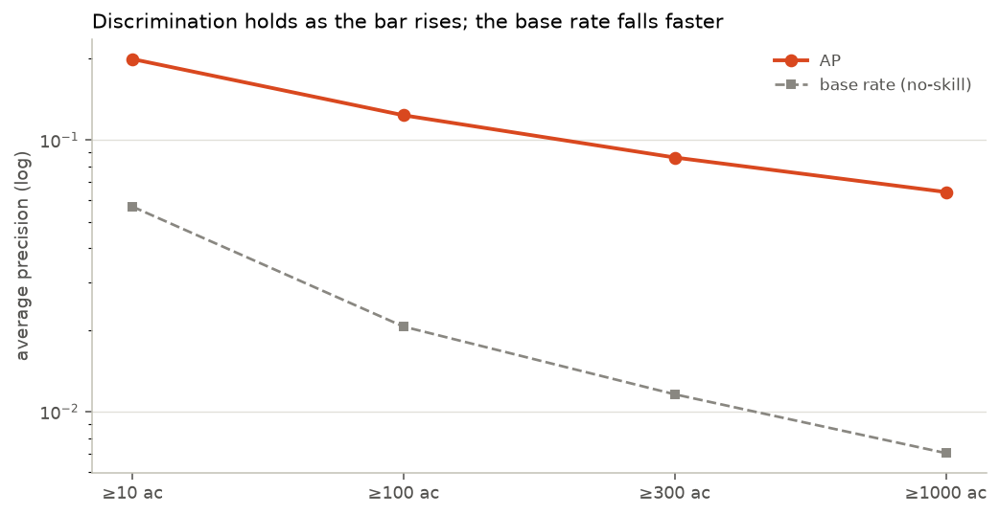
The feature foundry
Going back to the 308-column source for what the pipeline never took, then building the variables fire scientists actually use, from 30 raw columns to 86.
Cache v2: 29 columns the project had been ignoring
The biggest single omission was wind direction. Wind speed was cached; direction was not, which makes the defining mechanism of California's most destructive fires unmodelable. A Diablo or Santa Ana event is not just "windy": it is wind blowing downslope, aligned with the terrain, dry and warming as it descends. With direction and aspect together that becomes a feature:
wind blows TOWARD = wind_dir + 180 alignment = cos(radians(wind_toward - aspect)) downslope_wind = alignment x wind_speed x sin(radians(slope))
Also added: climatological normals (so today can be expressed as an anomaly), fine-fuel load (rangeland production, cheatgrass and exotic annual grass cover), vegetation structure (canopy cover, height, type), terrain ruggedness, and the remaining same-day weather needed for published fire-weather indices.
Circular fixes. Aspect became northness = cos(aspect) and
eastness = sin(aspect); wind direction became vector components;
day-of-year became a sine/cosine pair. Round 1 fed all of these as raw numbers, which asks a
tree to learn that 359 and 1 are neighbours.
Place-relative anomalies. An ERC of 70 means something different in the Mojave than on
the north coast. Every fire-weather variable with a published normal got an anomaly twin
(erc - erc_normal), which is what lets one model span regions.
Operational indices. The Hot-Dry-Windy Index (vapour-pressure deficit × wind speed) and the Fosberg Fire Weather Index (temperature, humidity and wind through an equilibrium-moisture-content function), three lines of arithmetic each, and both designed by fire scientists for exactly this regime.
Leakage-safe fire history. For each ignition: how many fires its 0.25° cell had in the preceding five years, and how long since the cell's last 100-acre fire. Both are knowable at ignition time only if the computation cannot see forward, so the builder ships an assertion that recomputes all three history columns (and, since Round 4, the same-day ignition count) for random rows from strictly-earlier records and requires equality. It fired once during development, on my own test harness, which had subsampled rows after computing history.
Building anomaly features produced infinities, which traced back to
ghm, the global human-modification index, range 0 to 1, carrying 3.4×1038, exactly float32-max, on 367 California rows.
It is a nodata fill. It was already a Round-1 model feature, so the published models
consumed it as a real measurement.
Round 2's audit hunted sentinels as strings ("-9999",
"NA") and never looked for a float too large to be physical. The
fix is one rule at reduce time (no quantity in this dataset legitimately reaches 1030), and the lesson is that a sentinel census must cover magnitudes as well
as spellings.
Collinearity is severe enough to make single-feature importance meaningless, which is why section 13 permutes in groups: cheatgrass and exotic annual grass are correlated at 1.00, canopy cover and vegetation height at 0.997, slope and terrain ruggedness at 0.971, and 1000-hour fuel moisture against 5-day maximum ERC at −0.96.
Three search stacks, one budget
The interesting question is not "what are the best hyperparameters" but "does the modern tuning stack beat a plain one when both get the same number of tries?"
Same spatial-block cross-validation, same metric, and the same trial count per track, corrected by the Round-4 review from an earlier "wall-clock" claim that was backwards. Two disclosed asymmetries survive: the tracks' actual wall clocks were 6.7 / 8.3 / 9.0 minutes (the winner consumed 35% more compute than the loser), and LightGBM's search space carries a row-subsampling dimension the two HGB tracks have no equivalent for. The bake-off compares stacks as practitioners use them, not perfectly matched estimators:
All three stacks installed and ran on Python 3.14, worth stating, since two of the three ship no version-specific wheel for it and the run depended on a stable-ABI build and a pure-Python package.
The search runs on 60,000 of the 200,967 training rows: every one of the 4,366 positives plus a random draw of negatives, which raises prevalence during search from 2.2% to 7.3%. That is a real distortion: configurations are ranked on a differently-balanced problem than the one they are finally fitted to. It buys a 25-trial search per track instead of a 3-trial one on a six-core laptop, and the winning configuration is refit on the full training set before anything is scored. All three tracks see byte-identical rows, so the comparison between them, which is what this section is about, is unaffected.
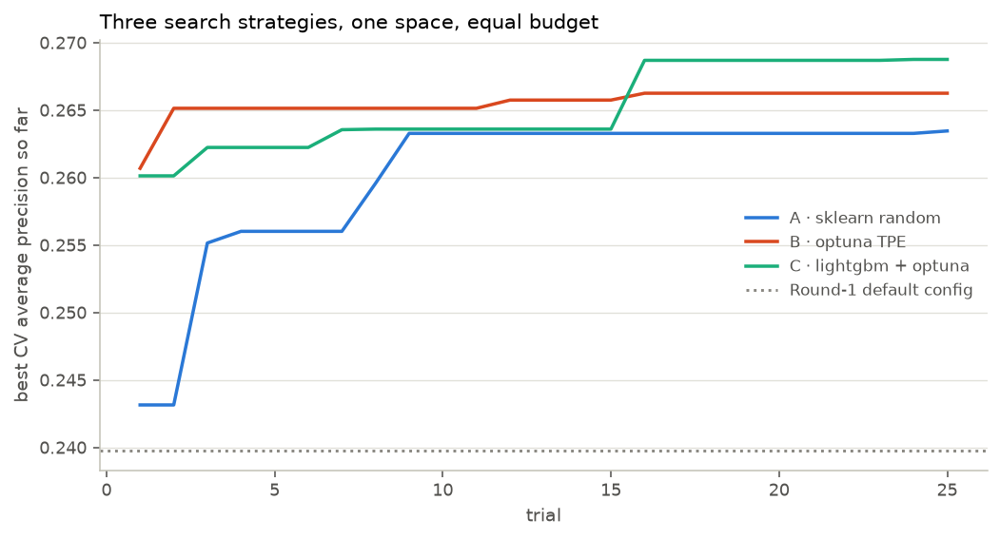
Each track ran the same 25 trials: random search took 6.7 min, Optuna's TPE 8.3, LightGBM 9.0. LightGBM finished top at 0.2688 cross-validated average precision, random search last at 0.2635, a spread of 0.0053, which clears the seed-noise bar (2× the 0.0023 per-system seed sd = 0.0046) but is dominated by the library change, not the tuner: the Nadeau–Bengio corrected t-test on the fold vectors gives p = 0.50 for Optuna against plain random search, so that null is earned rather than stamped. Tuning at all was worth +0.0290 over Round 1's untouched defaults on the search CV. The choice of search strategy mattered less than the decision to search at all. One more honest number: search CV runs at a 7.3% base rate and the test era at 2.06%, so "CV 0.27 vs test 0.12" is a change of denominator. Normalized, the model scores 3.7× chance in CV and 6.0× on test.
The zoo, with intervals
Nine configurations (seven learners and two baselines), each scored once on the test era, each with a spatial-block bootstrap interval, and paired tests that ask whether the gaps are real.
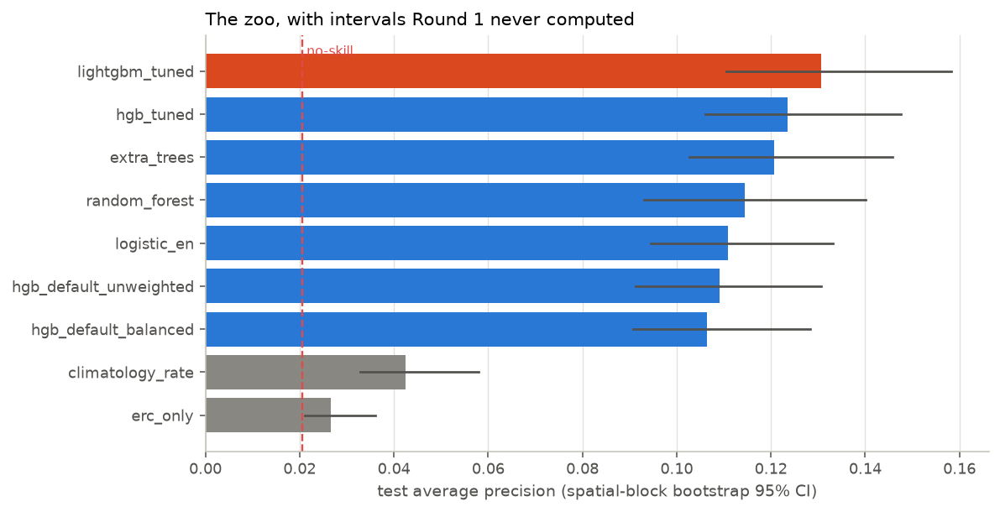
| model | AP | 95% CI | ROC-AUC | Brier skill |
|---|---|---|---|---|
| lightgbm tuned | 0.131 | [0.111, 0.158] | 0.820 | +0.05 |
| hgb tuned ★ | 0.124 | [0.106, 0.148] | 0.817 | +0.05 |
| extra trees | 0.121 | [0.103, 0.146] | 0.807 | -2.57 |
| random forest | 0.114 | [0.093, 0.140] | 0.798 | -0.08 |
| logistic en | 0.111 | [0.095, 0.133] | 0.807 | -5.00 |
| hgb default unweighted | 0.109 | [0.091, 0.131] | 0.809 | +0.04 |
| hgb default balanced | 0.106 | [0.091, 0.128] | 0.804 | -1.92 |
| climatology rate | 0.043 | [0.033, 0.058] | 0.620 | -0.03 |
| erc only | 0.027 | [0.021, 0.036] | 0.604 | n/a |
Two baselines are in that table deliberately. Climatology is the historical escalation
rate for the fire's own place and month, the number you get from a
groupby with no model at all. ERC-only ranks fires by a single
fire-danger index. A model that cannot clear both is not earning its complexity.
The non-GBM families were handicapped twice: they were denied the four categorical features
(including evt, SHAP's #2 feature), and they were fitted with
class_weight="balanced", the setting §07 demonstrates is broken, while the GBMs ran unweighted, which is why their Brier-skill column reads
−0.08 to −5.0. So "GBM beats forest by 0.016" is partly "GBM was given evt and not
poisoned." The fair re-runs (encoded categoricals, no weighting) are in
§15: Fairly equipped: random forest: 0.107 (was 0.114), BSS +0.04; extra trees: 0.110 (was 0.121), BSS +0.04; ridge logistic: 0.116 (was 0.111), BSS +0.05. The ordering conclusion (GBMs lead) holds, but the confounds cut both ways: the forests actually DROP without class weighting (it had been quietly helping their ranking), while the logistic model rises once given the categorical features. Every Brier-skill score turns positive, confirming the weighting was the calibration poison. And "logistic en" was
mislabeled: it is a plain L2 (ridge) logistic regression, no L1 component.
The number I got backwards
This section exists because the main article shipped a claim that is not true, and the correction is more interesting than the original claim.
Round 1's article said, under a reliability curve: "When the model says '12% chance this ignition reaches 100 acres,' about 12% do. Calibration is what turns a classifier into a triage tool."
The Brier skill score of the model actually published is -3.78. A skill score of 0 means "no better than forecasting the base rate for every fire." Negative means worse. Rebuilding that exact configuration here (same class weighting, this round's features) gives -1.92. Either way the sign is what matters: those probabilities were worse than saying "2.1%" to every fire in California.
The cause is class_weight="balanced". Re-weighting the rare class
is a reasonable way to make a model rank well on imbalanced data, and it worked: the ranking metrics were real. But it also tells the model that positives are as common as
negatives, so its probabilities come out centred near 0.5 on a problem whose true rate is 2%.
A roughly 24-fold systematic overstatement of risk.
The reliability curve I published did not catch it because I read the shape and never computed the skill. The curve bends in the right direction; the axis it bends on was wrong by an order of magnitude.
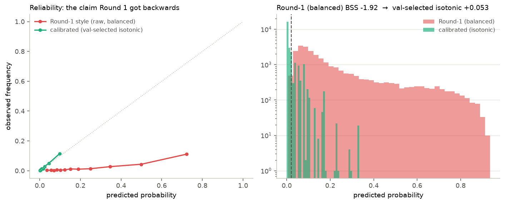
The fix uses the era Round 1 discarded: fit the model on training years, learn a mapping from raw scores to honest probabilities on the 2015–2017 validation era, apply it to the test years. The val-selected isotonic mapping moves the Brier skill score from +0.050 to +0.053 and the expected calibration error from 0.007 to 0.0035. It is not free: isotonic's step-function ties cost 0.013 of AP (0.124 → 0.111 on the seed-42 fit). Honest probabilities here carry a small ranking price, and both sides of that trade are printed. The calibration slope moves from 0.95 to 0.96 and the intercept from 0.267 to 0.057 (1 and 0 are ideal).
1. The choice between isotonic and sigmoid was originally made on the test set (a 0.0011 BSS margin, which is noise). Re-selected properly on the validation era in
run_redteam.py: val chooses isotonic, a different map than test-selection picked, which is why selecting on test was wrong, with test BSS +0.053. 2. The two maps disagree about the intercept:
under sigmoid it barely moved (0.267 → 0.268); under the val-selected isotonic it drops to 0.057, removing most of the level offset. 3. Isotonic is not free: it collapses
AP by 0.013 through step-function ties. Sigmoid preserves ranking exactly but calibrated
worse on the validation era (BSS 0.040 vs 0.047), and val makes the choice, which is the lesson of this note. 4. An ECE of 0.0035 at a 2% base rate is faint
praise: a constant base-rate forecast scores 0.000 and pure noise centred on the base rate scores ~0.007. Equal-count bins are mechanically kind at low prevalence. The
discriminating calibration evidence is the slope and the tail: in the top 5% of predictions
the model says 11.1% against an observed 12.5%, slightly underconfident, which is the safe direction.
Ranking metrics and probability metrics answer different questions. "Which fires are riskiest" needs only order. "Is this fire's risk worth a crew" needs a number that means what it says, and every cost-benefit calculation in the next section is built on probabilities, not ranks. A model can be excellent at the first job and unusable for the second, which is exactly what Round 1 shipped while claiming otherwise.
Decisions, not scores
With honest probabilities, the model can be evaluated the way it would be used: under a budget, against a cost ratio.
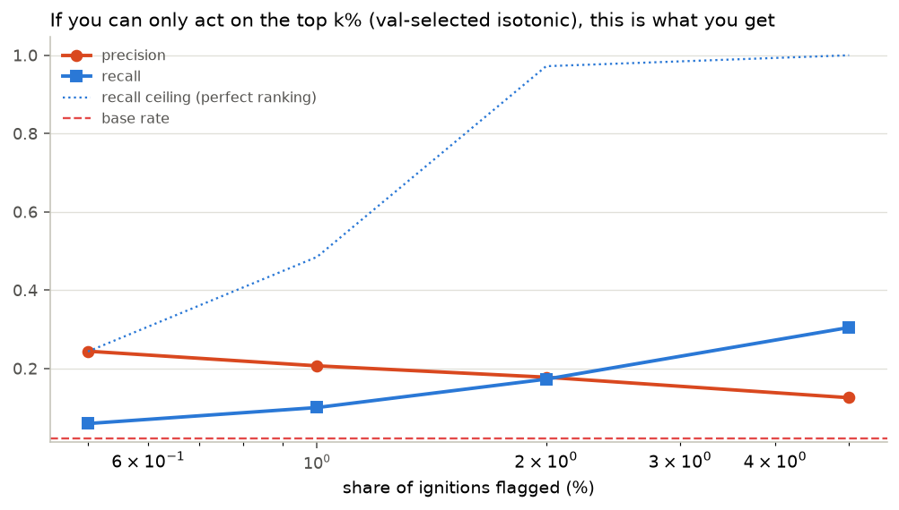
| budget | ignitions flagged | precision | recall | recall ceiling | lift |
|---|---|---|---|---|---|
| top 0.5% | 131 | 24.4% | 5.9% | 24.3% | 11.9× |
| top 1% | 261 | 20.7% | 10.0% | 48.5% | 10.1× |
| top 2% | 523 | 17.8% | 17.3% | 97.2% | 8.6× |
| top 5% | 1,307 | 12.5% | 30.5% | 100.0% | 6.1× |
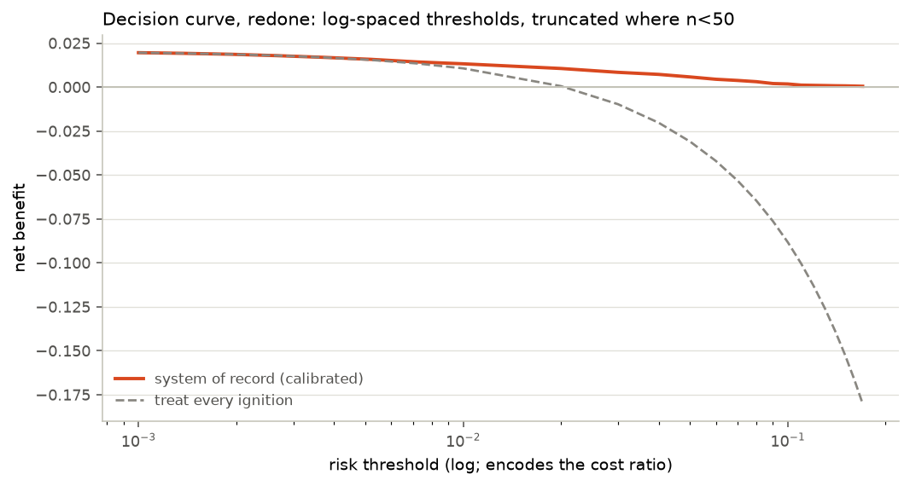
What the feature work actually bought
Every engineered family, added one rung at a time, measured with intervals, including the rungs that bought nothing.
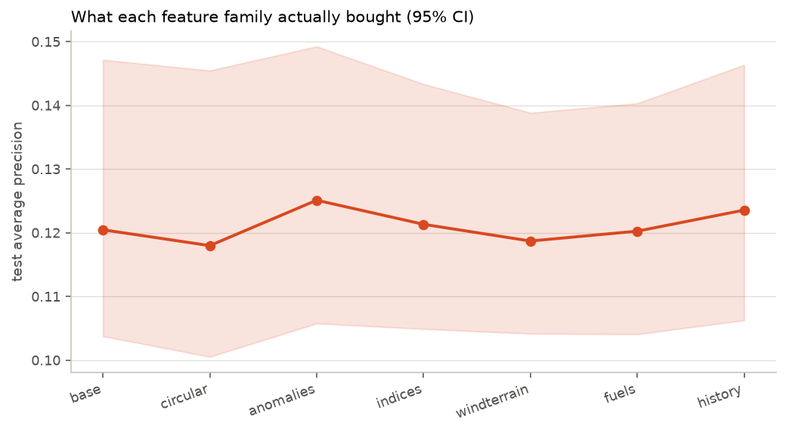
| rung | features | AP | 95% CI | vs base |
|---|---|---|---|---|
| base | 34 | 0.120 | [0.104, 0.147] | +0.000 |
| circular | 41 | 0.118 | [0.101, 0.145] | -0.002 |
| anomalies | 54 | 0.125 | [0.106, 0.149] | +0.005 |
| indices | 61 | 0.121 | [0.105, 0.143] | +0.001 |
| windterrain | 71 | 0.119 | [0.104, 0.139] | -0.002 |
| fuels | 80 | 0.120 | [0.104, 0.140] | -0.000 |
| history | 86 | 0.124 | [0.106, 0.146] | +0.003 |
Leakage, properly demonstrated
Round 1's leak probe moved the score by 0.0024 and I presented it as a warning. It deserves a better demonstration, and an explanation of why the first one was flat.
Why the original probe was right to do nothing
That probe added fire size to a model predicting cause. Fire size is not where a cause label comes from, and the model already knew "remote high-country lightning country" through elevation, ecoregion, vegetation and coordinates. Adding one weakly-informative column to a model that already had the information through other channels correctly changed almost nothing. The measurement was right; my framing of it was wrong.
A probe that bites
On the escalation task, fire size is the label source, so leakage can be demonstrated properly. The interesting rungs are not the obvious ones:
| rung | AP | what was added |
|---|---|---|
L0_honest | 0.124 | at-ignition features only |
L1_has_mtbs | 0.435 | MTBS maps only large fires -- the ID's existence encodes the outcome |
L2_has_ics209 | 0.593 | an ICS-209 is filed only for incidents that drew a management team |
L3_burn_days | 0.334 | containment minus discovery: only knowable after the fire |
L4_fire_size | 0.998 | the label source itself |
An MTBS identifier is a join key to a burn-severity mapping programme. It looks like metadata. But MTBS only maps fires above roughly 1,000 acres, so the existence of the identifier is very nearly the label: 99.2% of fires that have one reached 100 acres, against 1.6% of fires that don't. Same for an ICS-209 report id, which is filed only for incidents that drew a management team.
Neither column is named fire_size. Both would survive
"drop the obvious outcome columns." Both are now banned by name, and because name-based bans do not generalise, the pipeline carries an automatic tripwire. The v1 tripwire that shipped with this round (refuse any single feature above 0.90 AUC) was itself a Round-4 casualty: rare presence flags like the MTBS id sail under an AUC threshold, and it ran
only on the already-banned matrix. Tripwire v2 screens every raw column three ways (single-feature ranking AP above 5× base-rate lift, presence-precision above 20× base rate, univariate AUC above 0.80), runs before any ban is applied,
and raises instead of warning. It catches all four rungs of this ladder and passes the honest
set, whose ceiling is 1.72× (§15).
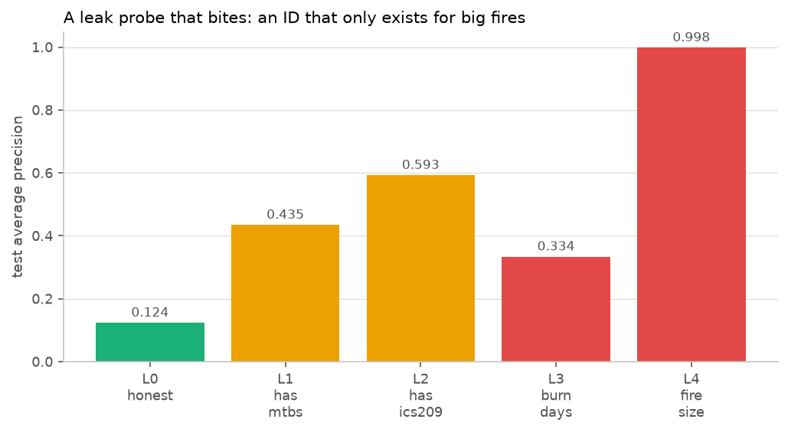
Does it hold up out of sample?
Two stress tests: across years, and across a completely different fire regime. (The third drift the audit flagged, cause-label availability, is answered in §03 by refusing to model that label at all.)
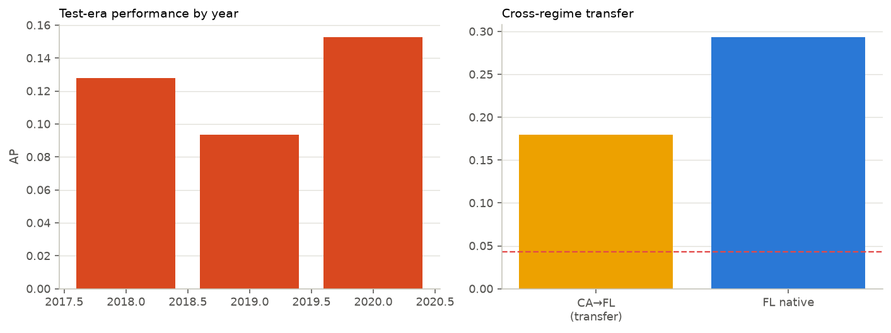
The transfer test is the harsh one. Florida's fire regime shares almost nothing with California's: it burns in spring, at high frequency, on flat terrain, with prescribed fire as a dominant land-management practice. A California-trained model applied to Florida is being asked whether it learned fire behaviour or California. The transfer result says California. Transferred AP is 0.180 against 0.293 for a Florida-trained model, still above Florida's 4.29% base rate, so some of what it knows is fire behaviour rather than geography, but the gap is the honest headline.
What generalizes, and what this model cannot answer
Two questions a reader is entitled to ask and this project had not answered: how much of the score is memorization, and can any of this predict a fire before it starts.
The in-sample gap, measured
Until now every argument here against overfitting was indirect. The direct measurement is one fit scored on all three eras, and it had never been run. Nothing else in this project quotes a training score, which is correct practice, but it also meant the gap was unknown rather than small.
| era | fires | escalations | base rate | AP | lift | ROC-AUC |
|---|---|---|---|---|---|---|
| train, ≤2014 (in sample) | 200,967 | 4,366 | 2.17% | 0.538 | 24.8× | 0.953 |
| validation, 2015–2017 | 24,773 | 524 | 2.12% | 0.099 | 4.7× | 0.813 |
| test, 2018–2020 | 26,142 | 538 | 2.06% | 0.124 | 6.0× | 0.817 |
The gap is large. Average precision falls from 0.538 in sample to 0.124 out of sample, a difference of 0.415. A boosted ensemble of 360 trees at 61 leaves each has ample capacity to memorize 200,967 rows, and it used it. That is the reason no score in this project is ever quoted from the training era.
What matters for deployment is the behaviour of the held-out estimates, and there the picture is stable. The validation era (2015–2017) and the test era (2018–2020) are independent future periods at almost identical base rates, and they score 0.813 and 0.817 ROC-AUC. A model that had fitted era-specific noise would decay as the evaluation moves further from training. This one does not: the later era scores slightly higher on both metrics. The drop happens once, at the boundary between in-sample and out-of-sample, and then it stops.
Compare the two columns across the same rows. ROC-AUC moves from 0.953 to 0.817, a decline of 14%. Average precision moves from 0.538 to 0.124, a decline of 77%. The same change in the same model reads as minor on one metric and severe on the other.
The reason is the base rate. At 2.06% prevalence, ROC-AUC is computed over all pairs of one escalation and one non-escalation, and the 97.9% majority supplies so many easy negatives that a model can rank most pairs correctly while still being wrong about nearly everything it flags. Average precision is computed where the decisions are, at the top of the ranking, so it registers the loss that ROC-AUC smooths away. This is why the protocol fixed average precision as the metric before any model ran, and why a reader who evaluates this model on its 0.817 alone will overestimate it.
The pipeline can still fail
A held-out score means nothing if the evaluation code would produce it from noise. Refitting the same configuration on permuted training labels and scoring the real test era gives AP 0.0232 against a base rate of 0.0206, a lift of 1.13, and ROC-AUC 0.513. Destroying the labels destroys the skill, which is what should happen and had only ever been demonstrated for the Round-1 cause model, not for this one.
Can this predict fires before they start?
No, and the reason is structural rather than a matter of accuracy. This model estimates P(escalation | a fire was reported). Every quantity it uses is conditioned on an ignition that already happened and was written down. Predicting ignition is a different estimand: P(a fire starts | this place, this day), and answering it requires the days and places where no fire started.
Those rows do not exist in this project. Every cache is fire-conditional. Dividing California into 0.25° cells that recorded at least one fire in 29 years gives 740 cells over 10,593 days, or 7.8 million cell-days. The caches contain 251,882 of them. The other 7.6 million cell-days, the ones where nothing ignited, are absent, and they are exactly the negative class an ignition model would learn from.
Rarity is not the obstacle, which was the first thing worth checking. An ignition occurs on 3.2% of those cell-days, so the positive class would be about as common as escalation is among reported fires. The obstacles are that the negatives are missing, and that they cannot be manufactured: every weather column here is sampled at the ignition point on the ignition date, so a cell-day with no fire has no covariates to describe it. Building that dataset means pulling gridded daily weather rasters, which is a data acquisition problem rather than a modelling one.
A second measurement bounds the question further. California recorded at least one ignition on 96.1% of the 10,593 days in this record. The binary question "will a fire start in California today" is answered yes almost every day and is not worth modelling. A useful ignition product would estimate spatial intensity, how many and where, which is a point-process problem rather than the classification this project is built around.
The forecast-time version of this question is reachable. The red team refit the model with all same-day weather removed, keeping only antecedent windows, climatological normals and static terrain, and it scored 0.126, statistically indistinguishable from the full model. So a version that runs on forecast inputs rather than same-day reanalysis loses nothing measurable. It still needs the ignition to have been reported. It ranks fires that exist; it does not anticipate fires that do not.
What the model actually uses
With features correlated up to 1.00, permuting one at a time measures nothing. The reliable read permutes whole families together.
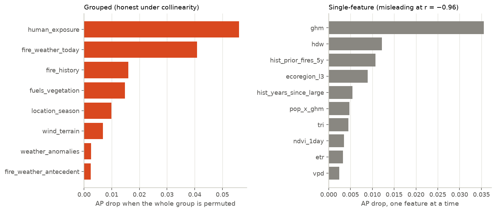
TreeSHAP on 2,000 sampled test rows ranks ghm, evt, pop_x_ghm, hist_prior_fires_5y, hdw, population highest by mean absolute contribution. Disclosure the Round-4 review demanded: this SHAP panel is computed on the LightGBM model while the grouped permutation runs on the HGB system of record, a different method and a different model. That the two agree on what matters is still evidence, but weaker than the original phrasing implied.
Human-exposure features dominate importance, so the hostile reading is "this is a remoteness lookup: remote fires get big because response is slow." Partly true, and measured: predicted risk correlates negatively with human modification. But the model keeps 3.5× lift inside the emptiest population tercile and 6.5× inside the most populated one. A lookup table would collapse to 1× within strata; this doesn't. Remoteness is a component of real risk, not the whole model.
Scoring the fire that started this
The model is trained on data through 2014. The Tubbs Fire ignited on October 8, 2017. It is not in the training data, the validation data, or any tuning decision.
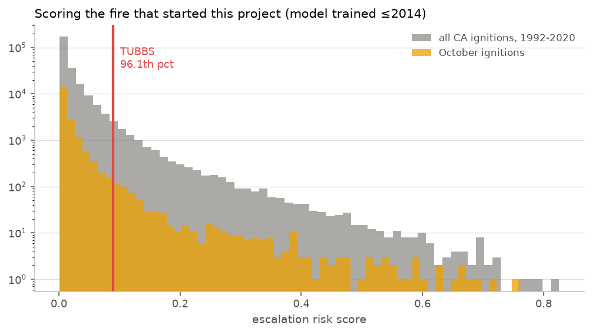
Ranked only against fires as out-of-sample as itself, the 50,915 California ignitions of 2015–2020, the model places the Tubbs Fire's ignition conditions at the 97th percentile, with a calibrated escalation risk of 9.4% against a 2.1% base rate. (In the mixed 1992–2020 reference it ranks 9,884 of 251,882, the 96th percentile, a smaller number that mostly reflects the model's in-sample sharpness on its own training years.) It saw an ERC 26 points above that location's normal, 6.3% humidity, and a Hot-Dry-Windy index of 133. High, but not extreme, and the reason is instructive. The wind-terrain alignment feature reads -0.75 for that day, meaning the daily mean wind was not blowing downslope. The Diablo event that drove Tubbs was a nighttime phenomenon lasting hours, and a 4 km daily average cannot see it. The model ranks Tubbs by the fuel dryness it can measure and misses the wind that did the damage, which is the limitation this project has flagged since Round 1, now quantified on the one fire it most wanted to get right.
This is one row, and one row proves nothing statistically. The evidence for the model is the 26,142-ignition test era rather than this fire. But it is the fire this entire project exists because of, and it is worth knowing what the finished model says about the conditions that morning.
Negative results
Its own section, because "we tried it and it didn't help" is a finding, and because a stage that reports only its wins is incomplete. Every null below carries an interval, because "no effect" and "no power to detect an effect" are different sentences.
The tuned configuration scored 0.124 (seed 42; the 5-seed system-of-record mean is 0.126) against 0.109 for the same model at default settings, a gain of +0.0145, about 13% relative, and the search's own cross-validated gain over the defaults was larger still (+0.029). But the test intervals are [0.106, 0.148] and [0.091, 0.131]: they overlap across most of their range. With 538 positives in the test era, this is a real point estimate that the data cannot separate from noise. Reporting it as "tuning works" would overclaim; reporting it as "tuning does nothing" would underclaim. It is directionally positive and underpowered, which is a different and more common situation than either.
DIRECTIONAL, UNDERPOWERED
At an identical configuration, class_weight="balanced" changed average precision by -0.0026 while driving the Brier skill score from +0.037 to -1.92. Round 1's most consequential modeling choice was pure cost, and the direct cause of the retracted calibration claim.
COST, NO BENEFIT
Optuna's TPE and LightGBM were given identical budgets and search spaces as plain random search; the best-of-track scores spanned 0.0053 average precision. The null is specifically Optuna-vs-random on the same library (Nadeau–Bengio p = 0.50); the cross-library spread clears seed noise but credits the library, not the tuner. Bayesian search is a better tool for expensive objectives than for this one.
CONFIRMED NULL
The full ladder (circular encodings, anomalies, published fire-weather indices, wind-terrain alignment, fuels, fire history) moved test average precision by +0.0031 in total, and several individual rungs moved it by less than their own confidence interval. Domain features earn their place in interpretability and in transfer, not necessarily on the headline metric.
CONFIRMED NULL
Applied to Florida, the CA-trained model scores 0.180 against 0.293 for a Florida-trained one on the same rows. Different fire regime, different drivers. The model learned California, and says so.
CONFIRMED NULL
Red team: the hostile review
Before this page went anywhere near a stakeholder, a fresh-context adversarial
reviewer audited every line of the Round-3 code with instructions to be merciless. It returned
35 findings. This section is the triage of what was broken and fixed, what was overstated and amended, and what was checked and held, with every new number produced by
run_redteam.py and enforced by the verifier like everything else.
The four that mattered most
| Finding | Severity | What happened |
|---|---|---|
| The KPI row mixed two models: the headline AP was LightGBM's, while everything calibrated, ablated, and Tubbs-scored was the tuned HGB, and the "champion" was picked as a max over nine test scores (winner's curse), with the runner-up not statistically separable (q=0.085) | BLOCKER | Re-keyed. The tuned HGB is the named system of record, the pre-committed, fully analyzed model. Its 5-seed test AP is 0.126 ± 0.0023; LightGBM's 0.132 ± 0.0022 is reported, not selected. The search-CV winner and the max-on-test winner happened to coincide; the procedure no longer relies on that luck. |
| The calibration map (isotonic vs sigmoid) was chosen on TEST Brier skill, which is circular and load-bearing for every decision number | BLOCKER | Re-selected on the validation era. The val-selected map's test numbers: BSS +0.053, slope 0.96, precision@1% 20.7%. |
| The v1 leak tripwire could not catch three of the four leaks the article showcases (rare presence flags sail under an AUC threshold), ran on the post-ban matrix (circular by construction), and "refuses" enforced nothing | BLOCKER | Tripwire v2: three complementary criteria with thresholds calibrated from measured
margins (honest ceiling 1.72× AP lift; weakest leak 7.1×), run on the raw
frame, with an actual raise. Demonstrated catching
all four ladder rungs while passing the honest set. |
| "Test scored ONCE per family, enforced in code", when the gate covered 9 selection scorings while ~330 diagnostic evaluations ran ungated | BLOCKER | Protocol text amended (see §01); the full accounting is published below. The defense that holds, diagnostics reported in full and never selected on, is now the stated one. |
The experiments the review demanded
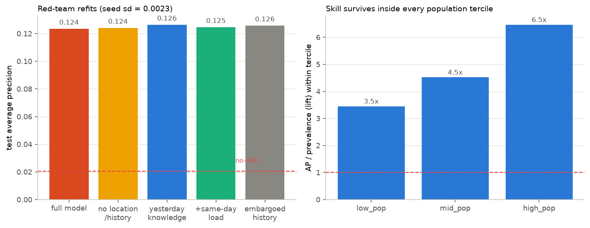
| Question | Experiment | Answer |
|---|---|---|
| Are the fine-grained Round-3 verdicts bigger than seed noise? (Nothing had ever been run twice.) | 5 seeds × both systems | Seed sd 0.0023 (HGB) / 0.0022 (LightGBM). Verdicts: the champion margin (+0.0070) SURVIVES seed noise; the tuner spread (+0.0053) SURVIVES seed noise; the feature gain (+0.0031) is WITHIN seed noise. |
| How much is memorized geography? | Refit without lat/lon, ecoregion, and all fire-history features | AP 0.124 against its same-seed baseline 0.124 (Δ +0.0006). Place identity turns out to carry little the physics did not already encode |
| Could it ever run operationally, given that same-day gridMET values (a day's MAX temperature) don't exist at decision time? | Yesterday-knowledge refit: all same-day weather dropped, antecedents/normals/statics kept | AP 0.126, +0.0029 above its same-seed baseline and within seed noise. An operational version restricted to yesterday-knowable weather loses nothing |
| The review's own feature idea: "how many other fires ignited in this cell today" (28.7% of rows share a cell-day; resource competition is real) | +same_day_cell_ignitions, refit |
ΔAP +0.0012, no material lift (paired p=0.769). The operationally appealing feature is, on this data, a confirmed null |
| Is the fire-history feature deployment-honest? (A prior fire still burning is not yet KNOWN to be large.) | Embargoed variant: prior fires count as large only once contained | ΔAP +0.0023. The causality assertion now verifies all three history columns rather than one |
| Was the zoo fair? (RF/ET/logistic were denied four categorical features incl. SHAP's #2, and handed the class weighting §07 proves is broken.) | Fair re-runs: encoded categoricals, no weighting | Fairly equipped: random forest: 0.107 (was 0.114), BSS +0.04; extra trees: 0.110 (was 0.121), BSS +0.04; ridge logistic: 0.116 (was 0.111), BSS +0.05. The ordering conclusion (GBMs lead) holds, but the confounds cut both ways: the forests actually DROP without class weighting (it had been quietly helping their ranking), while the logistic model rises once given the categorical features. Every Brier-skill score turns positive, confirming the weighting was the calibration poison. |
| Do the flagged near-duplicate rows move anything? (66 flagged across both caches; 4 land in the test era. Promised in Round 2, never run.) | Rescore the test era without them | ΔAP +0.0006. Receipt delivered. |
Every refit above is a single seed-42 run compared against its own seed-42 baseline (AP 0.124); the 5-seed system-of-record mean is 0.126.
Questions your boss will ask
It's a change of denominator, not a loss of skill. The search ran on a subsample at a 7.3% base rate; the test era's base rate is 2.06%, and average precision scales with prevalence. On the base-rate-normalized scale the model scores 3.7× chance in CV and 6.0× [4.8–7.5] on test, relatively better out of sample than in search.
2020 supplies 49% of the test positives, and it was the easiest year (AP 0.153 vs 0.094 in 2019). Leaving 2020 out entirely, the pooled test AP is 0.106. That is the number a 2021 deployment would have seen, and it is printed here so nobody has to ask.
Partly the latter, measurably the former. Predicted risk does correlate with remoteness (that is real information: remote fires get big because response is slow). But the model retains 3.5× lift in the emptiest population tercile and 6.5× in the most populated one. It ranks well within every stratum, which a lookup table could not.
Because the best test score was found by taking a max over nine test evaluations, a winner's-curse procedure, and its margin over the HGB, while real (it clears seed noise), is not statistically separable after multiplicity control (FDR q=0.085). The HGB is the model we committed to analyzing, calibrated on the validation era, and can deploy with zero extra dependencies. Reporting the max would overstate what was established; reporting the pre-committed system does not.
The full accounting
Gated selection touches of the test era: 9 (one per zoo family). Diagnostic evaluations, reported in full and never selected on: calibration variants 3, threshold ladder 4, ablation 7, leak ladder 5, by-year 3, transfer 2, grouped permutation 40, single-feature permutation 258, SHAP 1, Tubbs 1, and this red team's own refits, same rule. The earned null the review demanded: Nadeau–Bengio corrected t on the bake-off fold vectors gives p = 0.50 for Optuna-vs-random, so the "the tuner didn't matter" claim now has a test behind it rather than a stamp. Of the 35 findings: the four blockers above fixed, the remainder amended in place (protocol text, budget wording, labels, captions) or checked and held, each traceable in the repository. The full list ships in the repository.
Reproduce, and limits
python reduce_raw.py # cache v2: 29 added columns, overflow sentinels masked python tuning.py --probe # which of sklearn / optuna / lightgbm / shap are importable python run_modeling.py # the whole stage: bake-off, zoo, calibration, decisions python run_redteam.py # the hostile review: seed studies, refits, tripwire v2 (s15) python run_final_figures.py # re-render the calibration + precision-at-k panels (val-selected map) python verify_claims.py # every number on all three pages == the results JSONs
Limits, stated plainly.
- Daily weather cannot see gusts. The wind values are 4 km daily means. The nighttime downslope wind events that drive the most destructive fires are exactly what a daily mean smooths away. The wind-alignment feature is a direction-and-terrain proxy rather than a gust measurement.
- No suppression data. Whether a fire escalates depends heavily on what was sent to it and how fast. None of that is in this dataset, so part of what the model calls "risk" is really "risk given the response that actually happened."
- Five days is the whole drought memory. The antecedent window in this dataset stops at five days; multi-season drought enters only through the climatological normals.
- California only for the headline. The transfer test says what happens elsewhere; it does not make this a national model.
- Reported ignitions, not all ignitions: the standing caveat from the data audit, which applies to every model here.
- One analyst, one pipeline. These checks are the ones I thought to run. The code is in the repository so someone else can run the one I didn't.